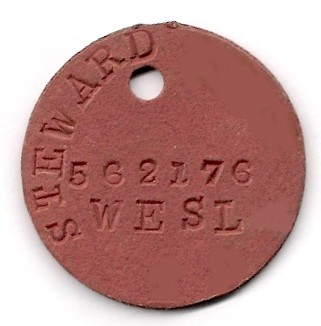

Roman Legionnaires had dog tags, called signaculum. They contained very basic information such as a person’s name and group. They were made of lead and had a leather rope attached for wearing around the neck.
The Chinese military started using them in the mid-1800s. However, at the start of the American Civil War fallen soldiers on both sides who died in battle were generally buried where they fell. The remaining soldiers realizedthat, in the event of their own death, their remains would never be identified nor would their family be notified of their demise. To aid in theiridentification these soldiers began pinning paper and cloth ribbons, printed with their name, unit, and hometown, to their uniforms. They would alsoscratch this information onto the soft metal of their belt buckles and stencil their name and hometown on their knapsacks.
American businessmen spotted an opportunity. Recognizing there was a market for name tags within the military they advertised pins displaying a soldier’s name, rank, unit and military status. Sutlers were civilian merchants who followed the troops and operated tent stores to supply tobacco and food staples to the soldiers. These sutlers also began supplying the soldiers with identification tags that were machine stamped from various soft metals. Usually, tags had a shield or an eagle on them, along with a phrase that represented war. For instance, one of the phrases used was “War for the Union.”
Just a few years after the American Civil War ended, tags were issued to the Prussian Army in the Franco-Prussian War in 1870. These had a German nickname “Hundemarken” and were based on an identification system for dogs.
Between 1862 and 1913, while the military considered a number of options for identifying soldier remains on the battlefield, individual soldiers continued to utilize makeshift identification methods. In 1906, a circular aluminum disc was presented. In 1907, the British Army followed suit. British i.d. tags were made from aluminum, the same metal the United States used at the time. Britain, Canada, Australia and New Zealand all retained the same basic identification discs until well into the 20th century.
The circular tags, handstamped with name, rank, serial number, unit, and religion were used during World War I.
1916 brought a change to dog tags. Both the United States and the British issued two dog tags. If a soldier died, one disc was removed to assist with recording the death. The other was left with the body for identification once it was removed from the battlefield. In an intense fight, if a soldier dies, medics can later retrieve the body; and know who they have. It has remained this way with more and more militaries adopting tags.
Around World War II, the circular tag was replaced by the more oval shape used by the military today. Its resemblance to dog collar tags led to the designation of “dog tag.” The tags used during World War II were stamped by a machine and had a rectangular shape with round ends and a notch on one side.
A gruesome rumor circulated that the notch was put in the tag so that the tag could be placed in a dead soldier’s mouth hold it open to prevent the body from gaseous bloating. However, the real reason for the notch was that the stamping machine required it to hold the tag in place during embossing.
During the Vietnam War, “changes were made to the information on dog tags. The dog tags went from the earlier eight digits with their prefix to the current nine-day digit Social Security number. You could have both stamped on your tag if you wanted; but, from this point on, the Social Security number was the main identifying number.”
Additionally, tags worn by the Marine Corps had a variety of additions including the size of their gas mask. A number of religions were added and full names were spelled out as well.
During World War II, the Soviet Union did not issue dog tags. Instead, they opted for a cylinder with a piece of paper in it providing the details. They began issuing oval tags after the war ended. The tags Russia uses today, are very similar to those..
Current dog tags still utilize a two-tag system, with one on a long a chain around the neck and one interlinked by a smaller chain. The point of this method is to have one that remains around the neck and another for the toe for the coroner’s purposes.
The US Army is currently developing and testing several new dogtags known by various names including the Soldier Data Tag, Individually Carried Record, Meditag, and the Personal Information Carrier. Using RFID(radio frequency identification), microchip or USB technology these dog tags will hold a soldier’s medical and dental records. These will not replace the current dogtag but will be worn in addition to the current dogtags. The TacMedCS currently being developed by the Marine Corps will use advanced electronics, RFID, and even GPS technology to help pinpoint wounded soldiers.
The Russian Armed Forces use oval metal tags, similar to the dog tags of the Soviet Army. Each tag contains the title 'ВС РОССИИ' (Russian for 'Armed Forces
of Russia') and the individual's alphanumeric number, as shown on the photo.
An American dog tag showing the recipient's last name, first name, Social Security number, blood type, and religion.
One of the two identity discs issued by the South African Navy during World War II with rank, surname, initials, force number and religious affiliation.

A World War I German army dog tag indicating Name, place of birth, battalion, unit and serial number.
Australian dog tags, fitted with rubber dog tag silencers. The information is printed exactly the same on both discs. In the event of a casualty, the circular tag is removed from the body.
Canadian Forces identity discs (abbreviated "I discs") are designed to be broken in two in the case of fatality; the lower half is returned to National Defence
Headquarters with the member's personal documents, while the upper half remains on the body.

In the Finnish Defence Forces, dog tags (sometimes called raatolaatta; "corpse plaque"/"corpse plate"-) are also designed to be broken in two; however, the only
text on it is the personal identification number and the letters SF (rarely FI), which stands for Suomi Finland, within a tower stamped atop of the upper half.
The military of Denmark use dog tags made from small, rectangular metal plates. The tag is designed to be broken into two pieces. Additionally, the right hand
side of each half-tag is engraved 'DANMARK', Danish for DENMARK.[16] Starting in 1985, the individual's service number (which is the same as the social security
number) is included on the tag. In case the individual dies, the lower half-tag is supposed to be collected, while the other will remain with the corpse. In the army,
navy, and air force but not in the national guard, the individual's blood type is indicated on the lower half-tag only, since this information becomes irrelevant if the
individual dies. In 2009, Danish dog tags were discontinued for conscripts.
Swedish identification tags are designed to be able to break apart. Swedish dog tags issued to Armed Forces personnel after 2010 are, for personal security reasons,
only marked with a personal identity number. During the Cold War, dog tags were issued to everyone, often soon after birth, since the threat of total war also meant
the risk of severe civilian casualties. However, in 2010, the Government decided that the dog tags were not needed anymore.